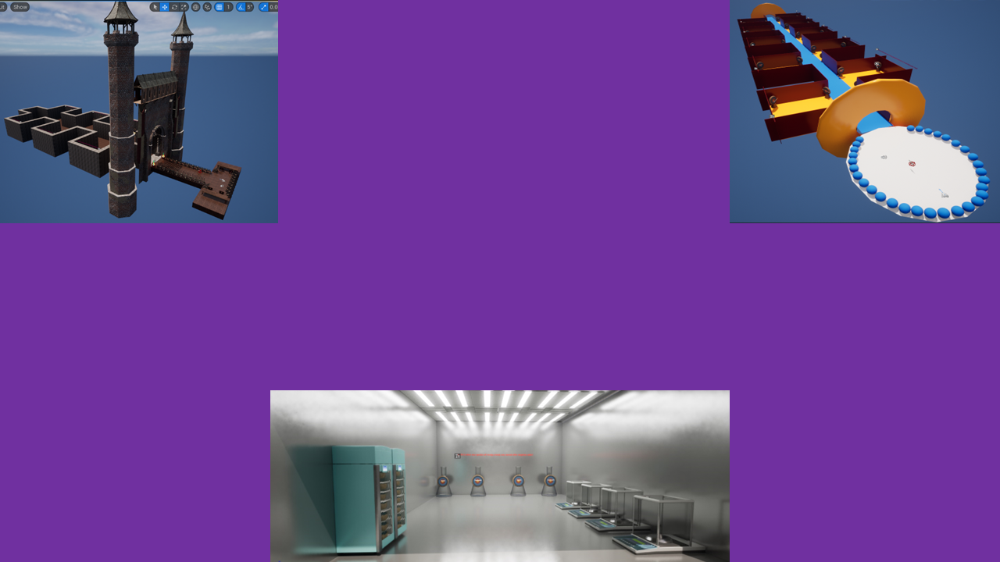

Game Engine Project
This game was made using C++.
This project consists of a train simulation where a train goes along a path and tries to collect all the diamonds while attempting to avoid stars on the course. The user wins by collecting all the diamonds without colliding with any stars.
OpenGl was used when creating specific complex shapes to act as consumables. Examples of this include star and diamond consumables which act as powerups.Different meshes also make up the environment such as lamp posts and the train model.